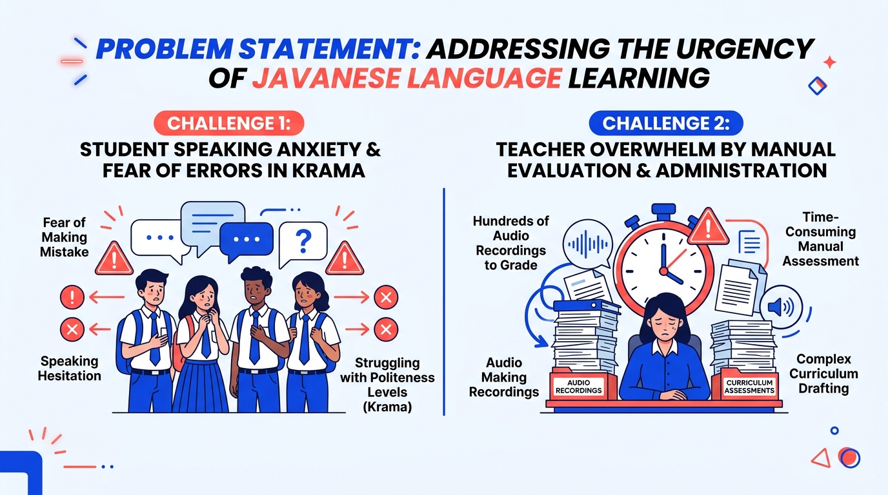
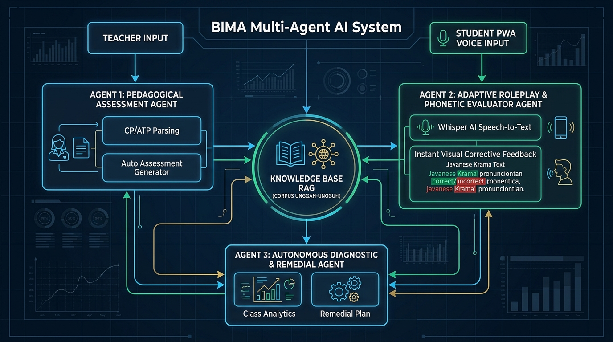
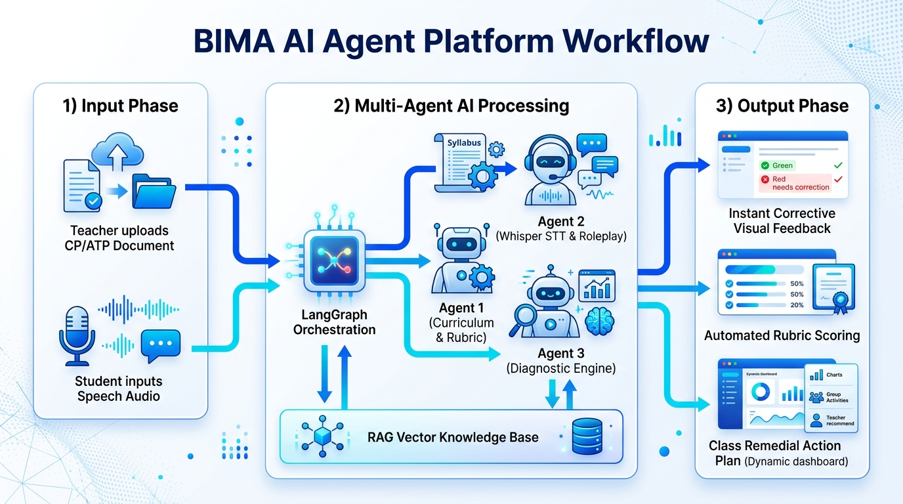
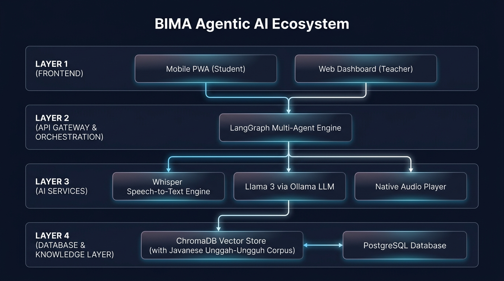

Ringkasan Proyek & Problem Statement
BIMA (Bisa Basa Krama) adalah ekosistem kecerdasan buatan otonom berbasis Autonomous Multi-Agent System yang dirancang untuk memecahkan krisis generasi penutur Bahasa Jawa Krama di kalangan remaja SMA/SMK/MA serta mengeliminasi beban administrasi evaluasi lisan guru dalam Kurikulum Merdeka.

Masalah 1: Speaking Anxiety Siswa SMA
Siswa merasa cemas dan takut mencoba berbicara Bahasa Jawa Krama karena takut melakukan kesalahan tingkatan bahasa (undha-usuk) di hadapan guru atau orang tua. Ketiadaan media latihan mandiri membuat siswa semakin pasif.
Masalah 2: Beban Evaluasi Lisan Guru (80%)
Guru Bahasa Jawa membutuhkan waktu berjam-jam mendengarkan puluhan rekaman suara tugas lisan siswa satu per satu, serta kesulitan menyusun skenario soal kontekstual sesuai Capaian Pembelajaran (CP/ATP) Kurikulum Merdeka.
Arsitektur BIMA Multi-Agent Ecosystem
BIMA bukan sekadar LMS biasa atau chatbot wrapper. BIMA digerakkan oleh tiga agen AI otonom yang saling berkoordinasi melalui orchestrator LangGraph:

🤖 Agent 1: Pedagogical Assessment Agent
Membaca dan mengekstrak dokumen silabus CP/ATP Kurikulum Merdeka secara otomatis. Agen ini merancang draf soal lisan berbasis skenario sosiokultural (misal: izin sakit ke wali kelas, tawar-menawar di pasar) serta rubrik penilaian Krama secara mandiri.
🎙️ Agent 2: Adaptive Pronunciation Agent
Menemani latihan percakapan siswa via Progressive Web App (PWA). Didukung oleh Whisper AI untuk speech-to-text akurasi tinggi dan menyajikan Instant Visual Corrective Feedback (3 Detik) dengan tanda warna hijau/merah dan pemutar suara penutur asli.
📊 Agent 3: Diagnostic Remedial Agent
Menganalisis hasil latihan siswa sekelas secara kolektif tanpa perlu guru menyimak rekaman manual. Agen mendeteksi pola kelemahan umum (misal 78% salah pada konsonan hembus /th/) dan menghasilkan rekomendasi modul remedial bagi guru.
Alur Kerja Sistem & Simulasi Interaktif

🎮 Live Simulator: Instant Visual Corrective Feedback
Uji coba alur deteksi ucapan Bahasa Jawa Krama seperti pada Mobile PWA SiswaSkenario Ujian: Menyampaikan rasa terima kasih dan permohonan maaf kepada Guru.
"Matur nuwun, Pak, kula nyuwun pangapunten menawi wonten kalepatan."
Spesifikasi Teknis & Arsitektur Teknologi

| Komponen Layer | Teknologi Terpasang | Peran & Keunggulan pada MVP |
|---|---|---|
| Multi-Agent Orchestrator | LangGraph / CrewAI |
Mengatur state machine, alur percakapan multi-turn, dan koordinasi antar agen AI secara independen. |
| LLM Core Reasoning | Llama 3 (8B/70B) via Ollama |
Ekstraksi kurikulum CP/ATP, pembuatan soal skenario sosial, serta evaluasi undha-usuk bahasa. |
| Speech Recognition (STT) | OpenAI Whisper AI |
Transkripsi suara siswa dengan ketahanan terhadap background noise dan variasi aksen lokal Jawa. |
| Vector Knowledge (RAG) | ChromaDB Vector Store |
Menyimpan ribuan lema kamus Krama Inggil dan etika sosiolinguistik agar LLM terbebas dari halusinasi. |
| Backend Server | Python FastAPI & Node.js |
Menyediakan endpoint asinkron latensi rendah (< 3 detik) untuk stream audio dan eksekusi model AI. |
| Frontend Mobile (Siswa) | Progressive Web App (PWA) |
Bisa di-install langsung tanpa PlayStore/AppStore, ringan, kompatibel di Android dan iOS. |
| Frontend Portal (Guru) | React / Vite + Tailwind CSS |
Dashboard analitik kelas real-time, manajemen dokumen CP/ATP, dan kontrol ujian lisan. |
Akses Live MVP & Panduan Pengguna
Platform BIMA (Bisa Basa Krama) telah dideploy secara penuh di cloud dan dapat langsung diuji coba tanpa perlu instalasi lokal:
1. Live MVP Web Application
Akses langsung aplikasi Smart LMS & AI Pronunciation Evaluator (Portal Guru & Mobile PWA Siswa) yang aktif secara live di Vercel Cloud:
🌐 Buka Live MVP (bima-ai-naic.vercel.app)2. Buku Panduan Pengguna Interaktif
Pelajari alur penggunaan lengkap untuk Guru dan Siswa melalui Buku Panduan Pengguna Interaktif BIMA:
📖 Buka Panduan Pengguna BIMAUntuk melihat berkas portofolio resmi dan penjelasan mendalam mengenai proyek BIMA, silakan kunjungi: https://unyku.id/Portofolio-BIMA-Project.
Video Demonstrasi Prototype
Video Demo BIMA AI Agent
Saksikan video demonstrasi pengujian sistem BIMA AI Agent untuk pembelajaran Bahasa Jawa Krama melalui tautan berikut:
▶️ Video Demo: unyku.id/BIMA-Video-DemoTim Pengembang (Tim Karna Allah — UNY)
Finan Muflih Ismail
Ketua Tim Pelaksana | NIM: 23050630009Fokus: Lead Developer, Perancangan Arsitektur Multi-Agent System, Speech AI (Whisper STT Pipeline), dan Fullstack Integration.
Jihan Khasna Ul Afiifah
Anggota Tim | NIM: 23050530017Fokus: Prompt Engineering CP/ATP Kurikulum Merdeka, Analisis Pedagogis, & Manajemen Operasional Lomba.
Farid Cahyadi
Anggota Tim | NIM: 23020230033Fokus: Pengembangan Frontend Progressive Web App (PWA) Mobile Siswa dan Web Dashboard Guru.
Nuryanti
Anggota Tim | NIM: 23010130028Fokus: Penyusunan Corpus Unggah-Ungguh Basa Jawa, Kamus Krama Inggil Vector Store, dan Validasi Instrumen Bahasa.